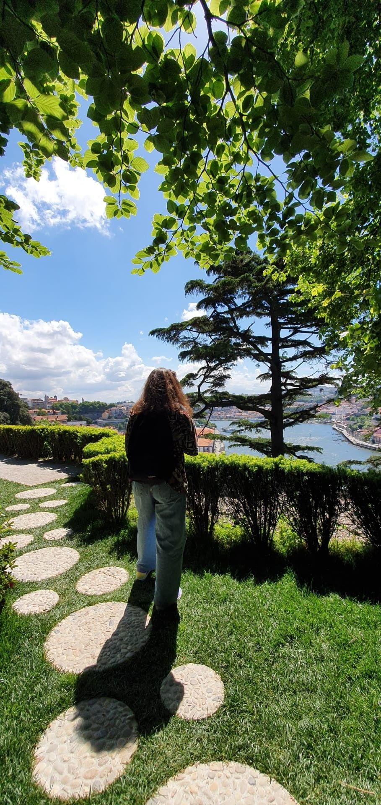

About me

Ana Catarina Fernandes Gonçalves
I’m a junior front-end developer that creates digital experiences.
Profession
Front-end developer
Date of birth
19 OCTOBER 1999
City
Braga, PT
Education
Flag
2022-2022
Specialized in Front-End Web Development.
In this course, I acquired all the theoretical knowledge and necessary skills to enter the job market and take up a professional activity related to front-end technologies.
Universidade do Minho
2018-2021
Bachelor's Degree in Portuguese and Lusophone Studies.
The Bachelor's Degree in Portuguese and Lusophone Studies meets the new challenges that today are posed to Humanities students, in a multicultural and global context.
HOBBIES
I am a person who likes challenges and undertakes the most advanced projects for learning and commitment.
Music
Travel
Space
Baking
Development
Photography
Professional skills
Html
Css
Sass
Bootstrap
Tailwind
Javascript
Angular
React
Typescript